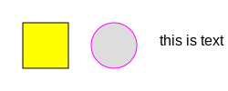

Overview
Scalable vector graphics, SVGs, are fantastic. The omsvg package lets you make SVGs using the R programming language, and, it tries to make the whole process a little less difficult. We can create SVG elements, transform them programmatically, apply filters, and even animate them.
Creating a Simple SVG
The process of using omsvg begins with the SVG() function. That allows you to define the overall size of the graphic and set some global options. Letâs start simple and make an SVG with three elements: (1) a rectangle, (2) an ellipse, and (3) some text. To do this, weâll use the svg_rect(), svg_ellipse(), and svg_text() functions.
svg <- SVG(width = 250, height = 100) %>% svg_rect(x = 25, y = 25, width = 50, height = 50, fill = "yellow") %>% svg_ellipse(x = 125, y = 50, width = 50, height = 50, stroke = "magenta") %>% svg_text(x = 175, y = 50, text = "this is text", attrs = svg_attrs_pres(font_family = "Helvetica"))
#> <svg width="250" height="100">
#> <rect x="25" y="25" width="50" height="50" fill="yellow"/>
#> <ellipse cx="125" cy="50" rx="25" ry="25" stroke="magenta"/>
#> <text x="175" y="50" font-family="Helvetica">this is text</text>
#> </svg>
Aside from rectangles, ellipses, and text, we can also elect to use circles (svg_circle()), lines (svg_line()), polylines (svg_polyline()), polygons (svg_polygon()), and as-complex-as-you-can-make-âem paths (svg_path()).
Animating an SVG
One thing thatâs really great about SVGs is that they can be animated, and, almost everything in an SVG is animatable. The omsvg package lets us animate each element with minimal frustration. Here is an example of a rectangle being quite animated.
svg_rectangle_anim <- SVG(width = 700, height = 150) %>% svg_rect( x = 100, y = 75, width = 100, height = 100, stroke = "cyan", fill = "lightblue", anims = anims( 0.5 ~ list( anim_position(initial = TRUE), anim_rotation(initial = TRUE) ), 2.0 ~ list( anim_position(x = 500, y = 75, easing_fn = ease_in_out()), anim_rotation(90, easing_fn = ease_in_out()) ) ) )
#> <svg width="700" height="150">
#> <style>
#> @keyframes anim_position_000001 {
#> 0% {
#> transform: translate(100px, 75px);
#> animation-timing-function: linear();
#> }
#> 25% {
#> transform: translate(100px, 75px);
#> animation-timing-function: linear();
#> }
#> 100% {
#> transform: translate(500px, 75px);
#> animation-timing-function: cubic-bezier(0.42, 0, 0.58, 1);
#> }
#> }
#>
#> @keyframes anim_rotation_000001 {
#> 0% {
#> transform: rotate(0deg);
#> animation-timing-function: linear();
#> }
#> 25% {
#> transform: rotate(0deg);
#> animation-timing-function: linear();
#> }
#> 100% {
#> transform: rotate(90deg);
#> animation-timing-function: cubic-bezier(0.42, 0, 0.58, 1);
#> }
#> }
#>
#> @keyframes anim_anchor_000001 {
#> 0% {
#> transform: translate(-50px, -50px);
#> }
#> 100% {
#> transform: translate(-50px, -50px);
#> }
#> }
#> </style>
#> <g style="animation: 2s linear infinite both anim_position_000001;">
#> <g style="animation: 2s linear infinite both anim_rotation_000001;">
#> <g style="animation: 2s linear infinite both anim_anchor_000001;">
#> <rect width="100" height="100" stroke="cyan" fill="lightblue"/>
#> </g>
#> </g>
#> </g>
#> </svg>
Animations are made through reference to keyframe times. Each of these times (in seconds) is like a transition point. Above, the rectangle is held at its initial position and rotation state until 0.5 seconds has elapsed. At 2.0 seconds, the second keyframe, the rectangleâs position is to be moved from {x = 100, y = 100} to {x = 500, y = 100}, and, its rotation state should change to 90 degrees. We can assign a timing function that governs the tweening of the animation. For the position and rotation changes, these are both using the ease_in_out() timing function (where movement eases into a maximum speed and then decelerates to a stop).
Installation
You can install the development version from GitHub with:
# install.packages("devtools") devtools::install_github("rich-iannone/omsvg")